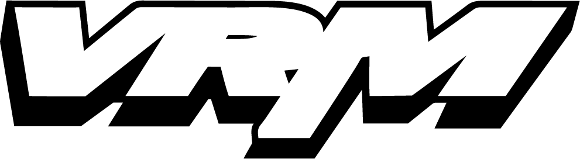
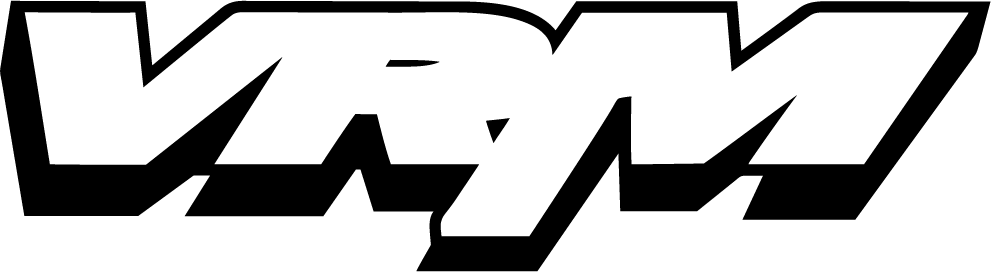
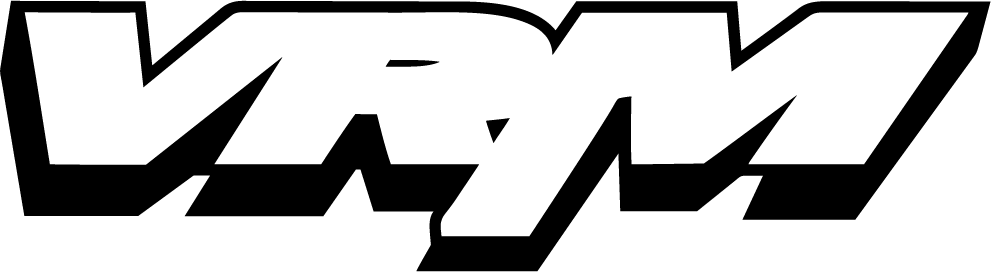
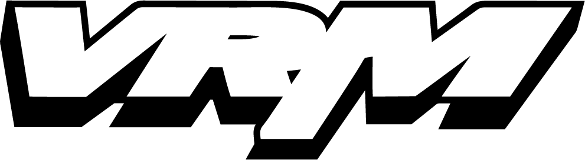

Team Virtually Real Motocross is in it's sixteenth year of existence (2018)! Team VRM was created by riders for riders. VRM's staff is just like our web site visitors and Team VRM applicants. VRM staff members ride as much as possible and enjoy the sport just like all riders of all levels. After years of building industry relationships and understanding the industry VRM finally has built a program which we feel will benefit all involved.
Over the years VRM has seen many dedicated riders not be able to obtain sponsorship and we're hoping we might be able to bridge that gap. From the mini-cycle rider to those VET riders who can't get enough of the sport, VRM's program might just be what you need to off set the cost of racing while providing exposure for VRM and our associates. VRM's program accepts riders of all skill levels and ages.
Team VRM consist of riders of all age groups, skill levels and varying geographic locations. Team VRM hopes friendships, riding partners and relationships are built where we are all fans of each other!
VRM is building our network of web sites and if your accepted you too may be part of the VRM program. Apply now by clicking on the Apply link! Application is FREE!
If accepted to Team VRM a rider must represent VRM, our associates, sponsors, other Team VRM members in the most professional manner possible. Any Individual not representing VRM or acting in an unprofessional manner may have their sponsorship terminated by VRM immediately without refund.